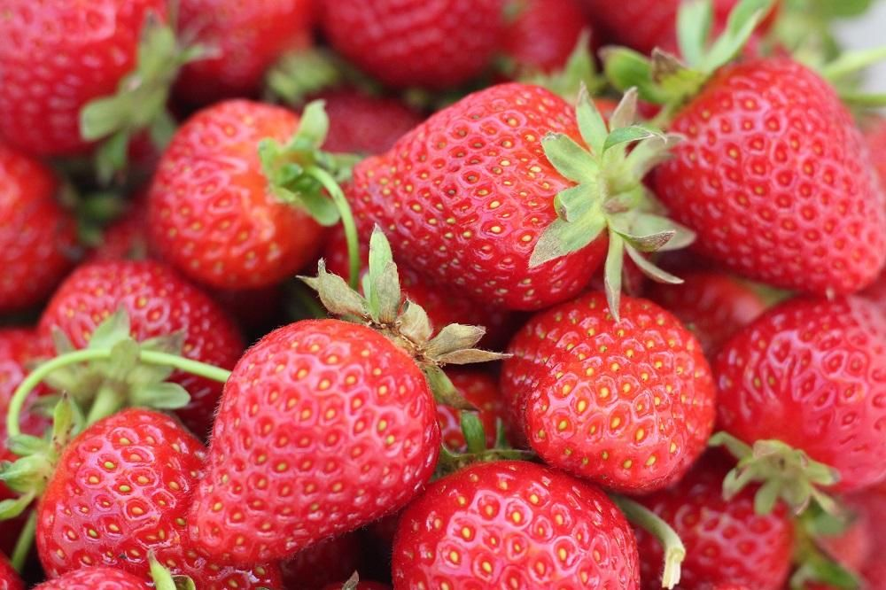

STRAWBERRY
Stroberi atau tepatnya stroberi kebun adalah sebuah varietas stroberi yang paling banyak dikenal di dunia.
Seperti spesies lain dalam genus Fragaria (stroberi), buah ini berada dalam keluarga Rosaceae.
Secara umum buah ini bukanlah buah, melainkan buah palsu, artinya daging buahnya tidak berasal dari
ovari tanaman (achenium) tetapi dari bagian bawah hypanthium yang berbentuk mangkuk tempat
ovari tanaman itu berada.